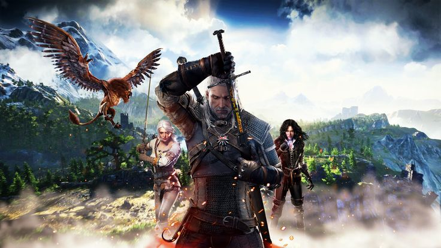
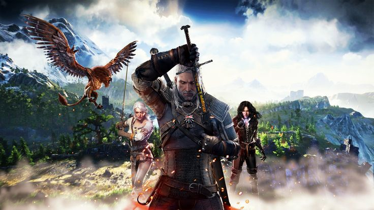

This page provides backstories to main and vital characters. Many characters provide much structure to the main story of the game. Different characters have different relationships with Geralt as they progress throughout the game choices that are made in respect to discussions and paths that Geralt encounters paves the course of the game and its multiple endings. Having strong bonds and making intuitive decisions that are based on the characters past relationship with Geralt are vital to understand who is on his side. Many different people are encountered during the game play throughout various story missions and side quests but all play an important role in understanding how the hierarchy works in this world. From peasants to kings many people cross Geralt's path and many need help along the way. Many enemies come from tribes and log lasting feuds with witchers in general. Being provided the information here allows you to understand how they function and think and allows you to exploit weaknesses as well.
What is a Witcher?
The Witcher is not a person, but rather a profession. To put it simply, they're monster hunters. The Continent, the land where the Witcher takes place, has a variety of beasts and ghouls. Some notable examples include the walking spirit of a forest called the leshen that's made up of plants, animal pelts and skulls, and the bruxa, a powerful female vampire who has a deafening scream. Witchers are trained to dispose of these monsters using a variety of tools and weapons at their disposal. Their most useful is their silver swords because the metal is usually the most effective against unholy beasts. They also have a selection of simple magic spells called Signs that can be cast using a particular sign with their hands. Two commonly used are the telekinetic push Aard and the fire spell Igni. Witchers can use Signs quickly in a battle at the expense of a bit of their own endurance. One of the most important Witcher tools is a silver medallion. These magical neckpieces vibrate when monsters are nearby or if magic is being used, which makes them invaluable to a monster hunter.
How does one become a Witcher?
Witchers are not born, they're made. Orphaned kids make up many of the monster hunters, and they're trained at schools located in different parts of the world. Each one has their own specialties and is represented by a different animal: Wolf Cat Viper Griffin Bear Manticore Crane Those training to become a Witcher learn magic, bestiary, weapons and herbalism. Once ready, a student will partake in a Trial of the Grasses where they're strapped to a table and are given different chemicals called Grasses. This process is what gives a Witcher several physical advantages such as improved healing, the ability to see in the dark and supernatural strength. The trial is painful and dangerous with most wannabe Witchers dying in the process. A student becomes a full-fledged Witcher once the trials are over. They will then travel across the land hunting monsters for money, being despised by others for their unique appearance. Witchers are a dying breed. There are far fewer monster hunters as the lands have become safer, so their services are less needed. The Witchers are also reluctant to train new recruits as they're all too familiar with the pain from their trials.
Who is Geralt of Rivia?
Geralt, played by Henry Cavill in the series, is considered a unique Witcher. Because of his ability to withstand the Trial of the Grasses, he was subjected to additional testing, causing him to gain more abilities while also turning his skin and hair pale white. He was left at School of the Wolf as a child by his mother Visenna, who was a sorceress. It's presumed that his father is a warrior named Korin who once helped Visenna. Despite what his name suggests, Geralt is not from the land of Rivia. Witchers are taught to come up with their own surnames to appease potential clients. He originally wanted his name to be Geralt Roger Eric du Haute-Bellegarde, but after a bit of ridicule from his teacher, Geralt took a knife and picked a random spot on the world map, which ended up being Rivia. In the early novels -- Sword and Destiny was the first novel, though the second, The Last Wish, is considered the first canonically -- Geralt's adventures are split into short stories with a similar tone. He's often hired by someone wealthy, usually royalty, who asks him to deal with some sort of beast. He's a pragmatist when it comes to monster hunting, but he's also a cynic when it comes to humans. His jobs have him dealing with people who hide their true intentions and, at times, can be a monster in their own right.
Who is Yennefer and what's her relation to Geralt?
Yennefer of Vengerberg, played by Anya Chalotra, is a key character in the Witcher universe. She's considered Geralt's true love, but many times, she acts more like a partner-in-crime in his adventures. Like Geralt, Yennefer had a rough childhood, which contributed to her strong will. She was born with a humpback and is a quadroon, a person who is a quarter elven on her mother's side. Her father abused her over these differences and once he left, her mother continued the abuse. Yennefer was picked to join the Aretuza Academy to be trained as a sorceress. She was one of the best students and was able to heal her spine and use magic to give her a legendary beautiful appearance. The two met during one of Geralt's adventures involving a djinn, an air elemental most people would recognize as a genie from a lamp. When his friend was ill and could only be cured by magic, Geralt made his way to the city of Rinde where Yennefer was. After a standoff, they worked together to defeat the monster and fell in love.
Why is Cirilla important?
Ciri's potential ability to move between Spheres makes her of particular interest to the Wild Hunt, and her Elder Blood is why Francesca and the Elves, who believe her to be integral to the Prophecy of Ithlinne and their pursuit of Dol Blathanna, consider her so important
 
